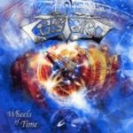

|
|
||
Custard : Wheels of Time (2005) |
|

http://www.custard.de |
1. Fragments Of Eternity 1:10 |
9.0/10 |
|
Custard es una banda alemana, fundada a finales de los ochenta por el batería Chris Klapper. En sus orígenes tocaban thrash, pero se han ido reconvertiendo en un grupo de power metal de estilo absolutamente clásico, como queda claro en este, su tercer disco, "Wheels of Time". "Fragments of eternity" es una pequeña pieza que suena como la maquinaria del tiempo y que actúa como introducción a "Wheels of time", una buena canción de inicio, melódica, pegadiza y desgranada sobre un vertiginoso doble bombo. "Escape reality" templa un poco el ritmo aunque la batería sigue muy presente y se acelera notablemente en el estribillo, que por cierto es de lo mas pegadizo del álbum. El doble bombo vuelve a gobernar en "Chance", otro buen tema, con algunas interesantes superposiciones de voces. "Inner Void" mantiene el inapelable doble bombo como hilo conductor de una melodía interesante con algunos cambios de ritmo que mantienen el interés. Ritmo rápido pero menos en "One step too far", una canción interesante por el trabajo vocal y por el impactante estribillo. Una vez más el doble bombo no deja respiro en "Sunrise", otro frenético tema que además cuenta con unos llamativos coros en el estribillo. De tiempo medio podemos calificar "Shine on"; lo mejor de este tema es el estribillo y algunos coros muy melódicos. La batería vuelve a invocar la ley del más rápido en "Fade out", una canción de estilo muy clásico, con algunos coros sencillos pero efectivos en el estribillo y una cierta rabia apenas contenida que impregna la atmósfera. "Lost forever" mantiene las pautas dadas en el resto del disco, por lo que de nuevo cuenta con una melodía interesante sobre una batería rápida y un buen estribillo. Y como no para cerrar el disco un doble bombo aplastante, una digna melodia y un furioso estribillo que no se te olvida. El sonido de la banda es fácilmente encasillable como "power metal alemán", la voz de Guido Brieke hace un buen papel y los instrumentos están bien tocados en conjunto aunque sin grandes virtuosismos individuales. Custard es buen grupo, no extraordinario, que toca un metal nada original y que en este disco ha hecho un trabajo sobresaliente en prácticamente todos los temas. |
||
- Crítica escrita por Rubén Béjar - |
||